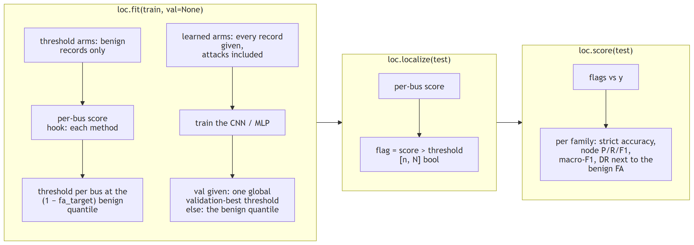
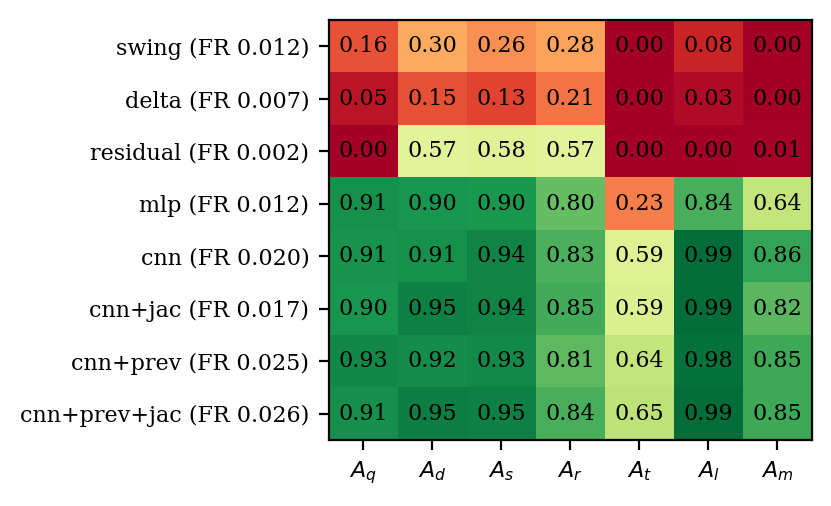
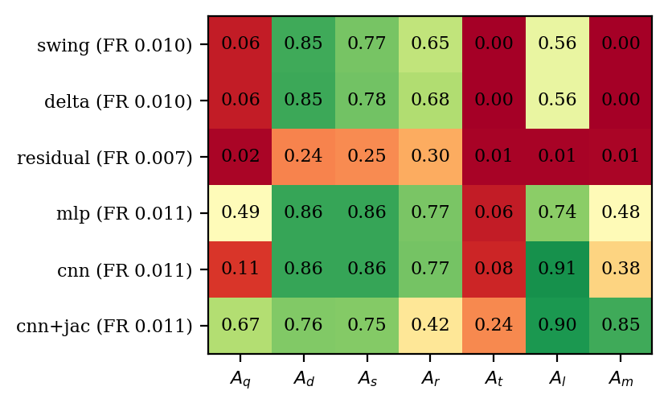
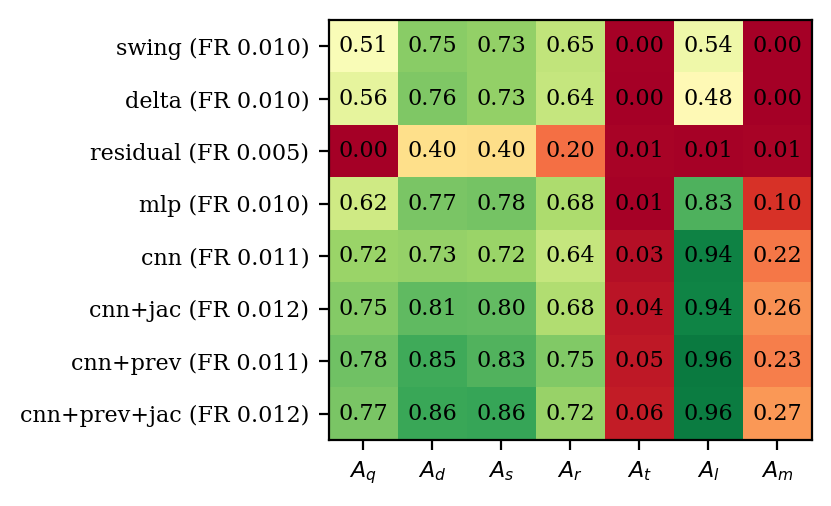

Localization with fdia_graph.localization¶
Which buses are under attack, per scan.
import fdia_graph as fg
from fdia_graph.localization import SwingThreshold, DeltaThreshold, ResidualLocalizer, BusCNN, BusMLP
train = fg.load("ieee14", split="train")
test = fg.load("ieee14", split="test")
loc = SwingThreshold(fa_target=0.01).fit(train) # thresholds set on benign records only
flag = loc.localize(test) # [n, N] bool: which buses are called attacked
rep = loc.score(test) # per-family metrics + benign false alarms

| shared | metrics and the benign-quantile calibration in LocalizerBase; a threshold arm changes only the per-bus score, a learned arm also overrides fit to train on every record and, given val, the threshold |
| budget | every method is calibrated to the same false-alarm target (fa_target), set per bus on benign training records, and the measured test FR differs by method; the one exception is a learned arm given val, which picks one global validation-best threshold from labelled records (the papers' zero-shot protocol) |
"all" entry |
pools every record; the papers' per-bus macro F1, DR and FR over the buses attacked somewhere in the scored split |
The methods¶
| Class | Score | Needs |
|---|---|---|
SwingThreshold |
The dataset's windowed swing feature: each scan's injection change as a z-score of the bus's typical recent change | numpy only |
DeltaThreshold |
The raw one-scan change scaled by the bus's benign RMS. Same signal without the windowing, so the gap shows what windowing buys | numpy only |
ResidualLocalizer |
Largest normalized residual from a state-estimation solve (any fdia_graph.se estimator, default WLS), aggregated to each bus's own meters and incident flows. Textbook bad-data identification |
[se] extra |
BusMLP |
The papers' lightweight arm: one 4x128 MLP applied to every bus's own 14-dim vector (readings, meter mask, partial KCL residual, delta, swing). 52k parameters | [torch] extra |
BusCNN |
The papers' best localizer: a 1-D convolution across the bus axis over the same 14-dim vector, 4 layers of 128 channels, kernel 3. No graph read. 154k parameters | [torch] extra |
The learned arms train on the records they are given, so the protocol is the load call.
fit(train, val=val) picks the papers' validation-best threshold instead of the false-alarm one.
Feature sets¶
BusMLP, BusCNN and the federated arms take features=, the per-bus vector the encoder reads
(localization.learned.FEATURE_SETS):
features= |
channels | per bus | needs |
|---|---|---|---|
"meas" |
8 | the readings and the meter mask | any dataset |
"full14" (default) |
14 | the papers' vector: readings, mask, partial KCL residual, temporal_delta, swing |
any dataset |
"full14+prev" |
16 | full14 and the previous frame's swing (prev_swing) |
a timeline |
"full14+jac" |
22 | full14 and the 8 Jacobian features |
a timeline, [se] |
"full14+prev+jac" |
24 | full14, prev_swing and the 8 Jacobian features |
a timeline, [se] |
"jac" |
8 | the Jacobian features alone | a timeline, [se] |
The previous frame's swing separates a one-frame attack from the frame after it, which carries
the same jump back with the opposite sign. The Jacobian block takes each frame's measurement change
against the previous frame's estimate, so both read the previous frame and need a timeline
(ds.export serves prev_node_x, prev_edge_x, prev_timestep and prev_swing on request).
Results¶
| protocol | train and val | test | threshold |
|---|---|---|---|
| zero-shot (the paper's) | benign + Aq + Ad |
adds As and Ar, never seen in training |
learned arms validation-best; swing keeps its benign calibration |
| common | every family, unfiltered | the full split | benign quantile at fa_target=0.01 for every method |
F1, DR and FR are the paper's per-bus macro scores, averaged over the buses attacked somewhere in the
test split (F1 and recall over every test record, FR the per-bus alarm rate on benign records); full metrics in
results/loc_ieee{14,118,300}.json. Bold marks the papers' headline localizer, not the best cell.
Zero-shot protocol
| Method | F1 14 | DR 14 | FR 14 | F1 118 | DR 118 | FR 118 | F1 300 | DR 300 | FR 300 |
|---|---|---|---|---|---|---|---|---|---|
| Per-bus MLP | 0.7617 | 0.6785 | 0.0043 | 0.5479 | 0.4533 | 0.0020 | 0.4891 | 0.4568 | 0.0025 |
| 1D CNN | 0.7833 | 0.7209 | 0.0013 | 0.5394 | 0.4180 | 0.0005 | 0.4885 | 0.4505 | 0.0024 |
| Swing threshold | 0.1182 | 0.0658 | 0.0066 | 0.5518 | 0.6474 | 0.0097 | 0.5098 | 0.7876 | 0.0092 |
The paper reports 0.9634 / 0.9625 / 0.9524 for the CNN and 0.9626 / 0.9570 / 0.9327 for the MLP on
v0.4.1 data, and the SDK classes reproduce them on the v0.7.2 record shards. The v0.8.1 timeline columns are lower for the same detectors because their temporal features compare each frame with the frame emitted one minute earlier rather than with the benign scan before an attacked snapshot, so a sustained episode spikes at its onset and a one-frame family also spikes on the benign frame after it. Those post-attack benign frames stay in the benign calibration set on purpose: an operator's detector sees them too, so leaving them out would set lower thresholds and let the realized false-alarm rate exceed fa_target.
Common protocol
| Method | F1 14 | DR 14 | FR 14 | F1 118 | DR 118 | FR 118 | F1 300 | DR 300 | FR 300 |
|---|---|---|---|---|---|---|---|---|---|
| Swing threshold | 0.1026 | 0.0566 | 0.0066 | 0.4717 | 0.5342 | 0.0097 | 0.4356 | 0.6432 | 0.0092 |
| Delta threshold | 0.1004 | 0.0551 | 0.0062 | 0.4745 | 0.5507 | 0.0100 | 0.4371 | 0.6443 | 0.0092 |
| Residual (LNR) | 0.3885 | 0.4706 | 0.0041 | 0.1981 | 0.5953 | 0.0075 | 0.1855 | 0.5925 | 0.0064 |
| Per-bus MLP | 0.7813 | 0.7178 | 0.0106 | 0.5974 | 0.7187 | 0.0108 | 0.4358 | 0.6562 | 0.0105 |
| 1D CNN | 0.8255 | 0.8956 | 0.0209 | 0.5599 | 0.7184 | 0.0113 | 0.4570 | 0.6884 | 0.0119 |
| 1D CNN + Jacobian (C) | 0.8296 | 0.8695 | 0.0162 | 0.4074 | 0.7415 | 0.0128 | 0.4024 | 0.7162 | 0.0108 |
Per-bus F1 by attack family, common protocol. Row labels carry each method's FR.
| IEEE 14 | IEEE 118 | IEEE 300 |
|---|---|---|
 |
 |
 |
Jacobian-informed features: the digest's ablation¶
fdia_graph.se.JacobianFeatures transforms the measurement change through the estimator's Jacobian
(implied state move H⁺Δz, explained and unexplained parts and their ratio, sensitivity, leverage,
weak-direction energy) and aggregates it to buses; BusCNN / BusMLP take features=:
| set | features= |
input |
|---|---|---|
| A | "meas" |
measurements only |
| B | "full14" |
the papers' 14-dim vector (the rows above) |
| C | "full14+jac" |
B + the 8 Jacobian features |
| D | "jac" |
the Jacobian features alone |
Zero-shot protocol on the v0.8.1 timelines (benign, Aq and Ad seen; As and Ar unseen). The
Jacobian block takes each frame's change against the previous frame's estimate, so it reads
observed data only. C reads 0.820, 0.809 and 0.812 on 14, 118 and 300. Against the previous frame's
true state, a reference an operator does not have, C read 0.873, 0.896 and 0.840. The observed
reference costs D more than it costs C:
| Model (1D CNN, zero-shot) | F1 14 | DR 14 | FR 14 | F1 118 | DR 118 | FR 118 | F1 300 | DR 300 | FR 300 |
|---|---|---|---|---|---|---|---|---|---|
| A: measurements only | 0.609 | 0.657 | 0.0000 | 0.000 | 0.000 | 0.0000 | 0.000 | 0.000 | 0.0000 |
| B: measurements + temporal (the papers' 14) | 0.783 | 0.721 | 0.0013 | 0.539 | 0.418 | 0.0005 | 0.488 | 0.451 | 0.0024 |
| C: B + Jacobian features | 0.820 | 0.770 | 0.0019 | 0.809 | 0.714 | 0.0001 | 0.812 | 0.719 | 0.0000 |
| D: Jacobian features only | 0.689 | 0.597 | 0.0008 | 0.712 | 0.619 | 0.0000 | 0.709 | 0.659 | 0.0000 |
In the common protocol (every family in distribution) C edges the CNN on 14 (0.830 vs 0.825) and
loses on 118 (0.407 vs 0.560) and 300 (0.402 vs 0.457) at the same false-alarm target
(fa_target=0.01; C's measured FR is lower on 14 and 300 and higher on 118): its per-bus detection
rate is only slightly higher on 118 and 300 (0.74 against 0.72, 0.72 against 0.69) and lower on 14
(0.87 against 0.90), and it pays in precision on the buses around a local false state.
| finding | evidence |
|---|---|
| the features carry the in-place signal, not the stealthy one | on Aq the zero-shot macro-F1 is 0.74, 0.03 and 0.06 for B on 14, 118 and 300 and 0.07, 0.01 and 0.01 for D alone: the v0.8.1 timelines hold an Aq state over a multi-frame episode, and against the previous frame's estimate a held episode shows only at its first frame, as the history does; the gain is on the unseen families, As 0.50 to 0.91 and Ar 0.30 to 0.78 from B to C on 118, 0.55 to 0.93 and 0.34 to 0.74 on 300 |
| on a timeline they are what makes the vector work | B to C is +4, +27 and +32 zero-shot points; the papers' vector was built for the v0.7.2 shards, whose temporal features compared an attacked snapshot with the benign scan before it, and on a timeline a sustained episode spikes at its onset only |
| where they pay again | as the localizer that gates the estimator once meters are secured, ../trust/README.md |
Three readings¶
| reading | evidence | open case |
|---|---|---|
| the temporal spike is an onset signal | the swing threshold alone reads 0.10, 0.47 and 0.44 macro-F1 in the common protocol on 14, 118 and 300: it catches the one-frame families and the first frame of an episode, then the feature fades because each frame is compared with the frame emitted a minute earlier | the slow ramp At and the held redistribution Am inside an episode, and Aq inside an episode on the v0.8.1 timelines (the generator in this package makes every Aq episode one frame) |
| the classical arm misses every stealthy family | ResidualLocalizer finds in-place corruption and smears it over neighbours; on Aq / At / Al / Am its node-F1 is 0.015 or less, there is no residual |
it opens with a trusted set of meters, ../trust/README.md |
| learning plus physics holds with size | zero-shot CNN with the Jacobian block 0.820, 0.809 and 0.812 from 14 to 300 buses at FR 0.002 or below | the common protocol, with At, Al and Am in distribution, falls 0.830, 0.407, 0.402 with size: the per-frame localization of a sustained local false state is the frontier |
The same papers' protocol trained federated across K utilities, with the Jacobian block, is in
../federated/README.md.
Regenerate¶
FG_SYSTEM=ieee14 python docs/localization/run_localization.py # fits, writes results/loc_ieee14.json
FG_SYSTEM=ieee118 python docs/localization/run_localization.py
FG_SYSTEM=ieee300 python docs/localization/run_localization.py
python docs/localization/make_report.py # tables (markdown) + figures + CSV from the JSON
Minutes for IEEE-14 on a GPU laptop; about half an hour for 300, mostly the residual arm's solves.